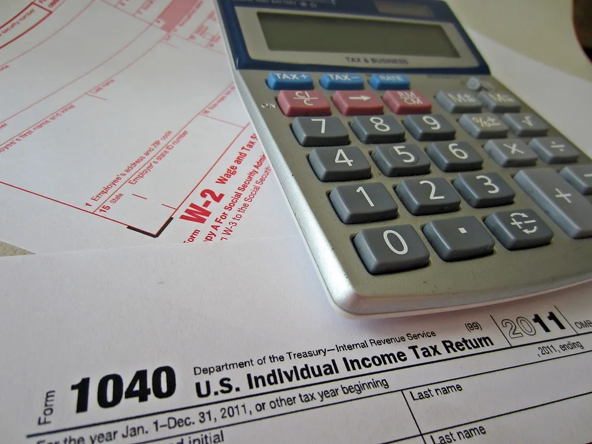
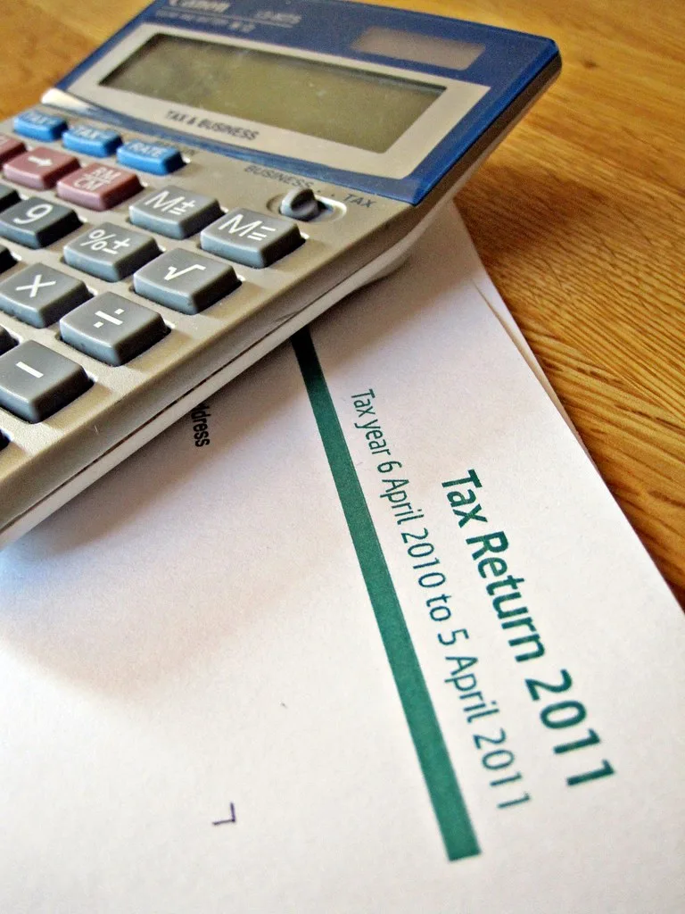

정부, 종부세·ISA 후퇴한 세제개편 수정안 확정…공은 정기국회로
정부가 지난 1일 국무회의에서 '2026년 세제개편안' 수정안을 확정했다. 지난달 3일 세제발전심의위원회에서 원안을 발표한 지 29일 만이다. 입법예고 기간에 8100건이 넘는 의견이 쏟아지고 시장의 반발이 커지자, 정부는 이례적으로 국회 제출 전에 논란이 됐던 종합부동산세와 개인종합자산관리계좌(ISA) 관련 내용을 손질했다. 재정경제부는 관련 법률안을 정기국회가 시작되는 이번 주 안에 국회에 제출한다는 계획이다. 정부가 확정한 세제개편안이 시행되려면 국회에서 관련 법률이 통과돼야 하며, 통상 연말 예산안 처리와 함께 매듭지어진다.
이번 개편안의 핵심은 부동산 보유세를 '주택 수'가 아니라 '주택 가액과 실거주 여부'를 기준으로 다시 짜겠다는 것이다. 실거주 1주택자의 부담은 줄이고, 직접 살지 않으면서 여러 채를 보유하거나 초고가 주택을 가진 경우의 부담은 키우는 방향이다. 그러나 원안이 공개되자 "실거주와 비거주를 지나치게 갈라 세금을 매긴다", "중산층 1주택자까지 영향을 받는다"는 반발이 이어졌고, 정부는 발표 한 달도 안 돼 일부 내용을 되돌리게 됐다.
가장 큰 변화는 종부세다. 당초 정부안은 직접 살지 않는 1주택 보유자의 기본공제를 현행 12억 원에서 9억 원으로 낮추려 했으나, 이번 수정안에서는 12억 원을 그대로 유지하기로 했다. 실거주와 비거주를 지나치게 차등하는 것이 과하다는 지적을 반영한 결과다. 실거주 1주택자의 기본공제를 12억 원에서 14억 원으로 올리는 방안은 유지돼, 시가 기준 약 20억 원 이하 1세대 1주택자는 과세 대상에서 빠지게 된다.

ISA 관련 세법도 원점으로 돌아갔다. 정부는 일반형 ISA의 계약기간 제한, 납입한도 미사용분의 이월 금지, 2029년 일몰(제도 종료) 도입을 모두 철회하고 현행 제도를 유지하기로 했다. '개인 투자자에게 불리하다'는 비판이 거셌던 항목들이다. 다만 주가를 인위적으로 억누르는 행위를 막기 위한 별도 입법은 국회 논의로 넘겼다.
수정 없이 유지된 큰 틀도 있다. 종부세 공정시장가액비율은 현행 60%에서 70%로 오르고, 3주택 이상 보유자와 조정대상지역 주택 보유자는 2028년부터 80%가 적용된다. 시가 40억~50억 원을 넘는 초고가 주택의 세 부담은 커지도록 설계됐다. 정부는 부동산 세제의 중심축을 '주택 수'에서 '주택 가액과 실거주 여부'로 옮기겠다는 기조를 유지했다.

이형일 부총리 겸 재정경제부 장관 후보자는 국회 인사청문 준비 과정에서 "국회 심의 과정에서 일리 있는 지적이 있으면 수용할 것"이라며 "실거주·비거주를 차등하는 것이 과하다는 시장의 의견을 반영했다"고 밝혔다. 그는 부동산 세제의 큰 틀은 유지하되, 경제 현안을 정기적으로 논의하는 간담회를 새로 만들겠다는 뜻도 내비쳤다.
세제개편안은 이제 국회의 시간을 맞는다. 정기국회에서 2027년도 예산안과 나란히 심의되며, 여당 내부에서도 부동산 세제를 추가로 손질해야 한다는 목소리가 나오고 있어 국회 논의 과정에서 내용이 더 바뀔 가능성이 있다. 야당은 증세 규모와 형평성을 문제 삼겠다는 입장이다. 최종안은 연말 정기국회에서 확정될 전망이며, 부동산 시장과 다주택자들은 국회 논의 결과를 지켜보며 관망하는 분위기다.